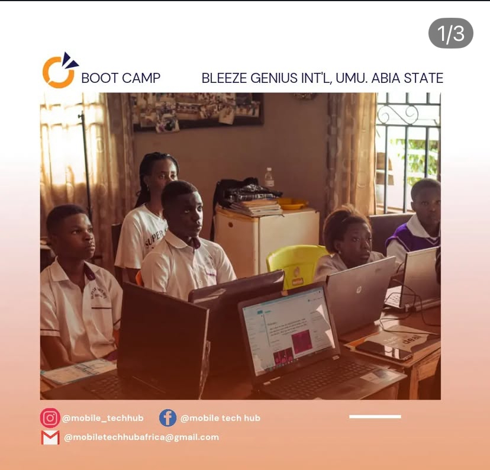
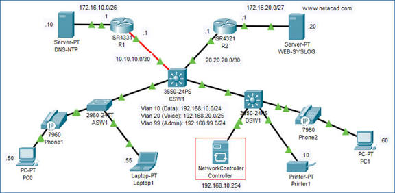
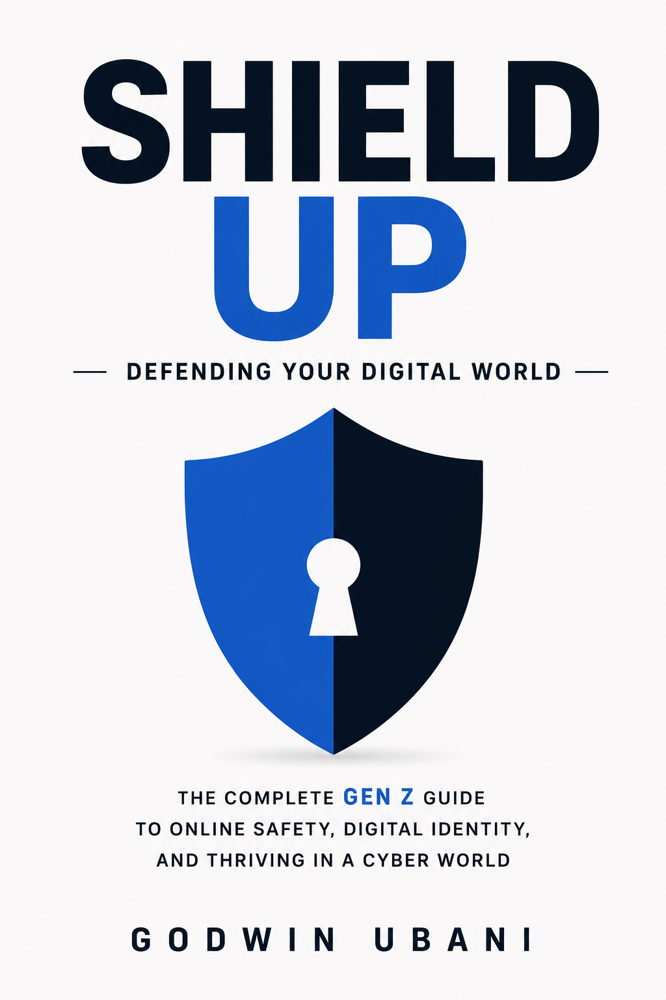

Building an AI assistant
Designing a practical assistant that helps people think, research and get useful work done with more clarity.
Software engineer · Entrepreneur
I’m Godwin Ubani, a software engineer and entrepreneur working across AI, cybersecurity and cross-border commerce.
Working acrossMarkets & disciplines
Now
Designing a practical assistant that helps people think, research and get useful work done with more clarity.
Studying where language models become products, and where security has to be designed into the product from day one.
Turning lessons from trade, security and building into clear ideas other people can use.
Personal AI guide
A focused assistant that helps visitors understand my work, experience, writing and ways to connect.
Ask it about my background, projects, technical strengths, book or public work. It is designed to stay on-topic and guide serious inquiries to the right place.
Work
Selected builds and concept case studies. Each project opens its own brief when the final screenshots and links are added.
E-commerce · Demo case study
A warm, conversion-focused storefront for a growing food brand moving from social orders to a dependable online shop.
View the demo briefHealthcare · Demo case study
A calm patient experience that explains services clearly, builds trust quickly and makes appointment requests feel effortless.
View the demo briefFinance · Demo case study
A sharp investor-facing website translating complex financial services into a clearer story for founders and partners.
View the demo briefLogistics · Demo case study
A practical web application concept for tracking shipments, surfacing exceptions and keeping customers informed across borders.
View the demo briefCreative studio · Demo case study
An editorial portfolio experience giving an independent studio a distinctive point of view and a more confident way to win work.
View the demo briefHow I work
Start with the real user, market and operational problem, not the feature list.
Give people a simple path through complicated systems, decisions and information.
Ship an honest first version, learn from reality and keep the product moving.
Make security, clarity and reliability part of the experience rather than afterthoughts.
The journey
A few of the places and practices that shaped how I build today.

WordPress, HTML, CSS and JavaScript turned curiosity into a profession.

Studying infrastructure and security made the invisible parts of technology impossible to ignore.
Working across disciplines and markets keeps the work grounded in real people and real systems.

Author · Cybersecurity
A practical guide to digital safety for people who do not consider themselves security experts.
Most security advice is written for people who already agree with it. Shield Up makes security useful, human and possible to act on, covering digital identity, threat modelling and the habits that actually survive real life.
Download the bookAbout Godwin
Godwin Ubani is a software engineer, entrepreneur and author building at the intersection of technology, commerce and everyday life. He is interested in the difficult middle: the place where a promising idea has to become a reliable product, a sustainable business and a useful part of somebody’s day.
His work spans full-stack product engineering, artificial intelligence, cybersecurity and venture building. He brings together technical depth, first-hand market context and a practical understanding of what it takes to move from concept to launch.
Godwin is building an AI assistant for clearer research, writing and decisions. He is also the author of Shield Up: Defending Your Digital World, a cybersecurity guide written for people who do not want to become security experts before protecting themselves.
Whether he is writing software, explaining a security problem or shaping a new venture, his approach is consistent: understand the real constraint, remove unnecessary complexity and build something people can trust.
TypeScript, React, Next.js, Node.js, Python and cloud infrastructure.
LLM products, secure architecture, prompt security and practical education.
Product strategy and go-to-market for ambitious, useful businesses.
Writing
4 min read
Nothing. It proves nothing. Here is what to ask for instead.
Read the essay3 min read
The panels work fine. It's everything around them that breaks.
Read the essay4 min read
Prompt injection is the same bug we've been shipping since 1998, wearing a hat.
Read the essay3 min read
Notes from Ganzhou, and one conference that rearranged how I think about the gap.
Read the essay4 min read
What I learned writing a cybersecurity book for people who don't care about cybersecurity.
Read the essay4 min read
Everyone asks what the naira buys today. Almost nobody asks the question that actually costs them money.
Read the essay